Ofnuts의 김프 도구 테스트
Setting Cleaner(설정 정리기)
ofn-settings-cleaner/ofn-settings-cleaner.py
메뉴: 없음(None). 김프 시작시 자동 실행(automatically starts with GIMP)
설명서: ofn-settings-cleaner/ofn-settings-cleaner.html(번역)
각 도구의 설정 파일에서 이름 없는 미리설정을 최근 10일치, 최대 5개만 남기고 삭제.
ofn-settings-cleaner/ofn-settings-cleaner.py는 사용자 plug-ins 폴더 중 하나에 저장하고
GIMP 버전에 따라 ofn-settings-cleaner.2.10.sample.ini 또는 ofn-settings-cleaner.2.8.sample.ini을 ofn-settings-cleaner.ini로 이름을 바꾸어
GIMP 2.10은
{김프 프로파일 폴더}\filters 폴더에 저장
(Windows 10은: %AppData%\GIMP\2.10\filters)
(Ubuntu 20.04는 : ~/.config/GIMP/2.10/filters)
GIMP 2.8은
{김프 프로파일 폴더}\tool-options 폴더에 저장
(MS Windows에서는 %USERPROFILE%\.gimp-2.8\tool-options )
(Linux에서는 ~/.gimp-2.8/tool-options )
ini 파일의 구성은 설명서 참조
copy-ofn-tools-UBUNTU-WIN10.py을 실행하고 김프 버전을 선택하면 ini 파일도 알아서 복사함.
사용자 애드온(붓/패턴/그레이언트/곡선/Script-fu스크립트 등) 모음 관리자
addonCollectionManager-3.0.py
설명서: http://gimp-tools.sourceforge.net/managementtools.shtml
addonCollectionManager.ini (플러그인이름.ini, 버전 번호 생략. 표준 사용자 플러그인 폴더에 저장.) 는 작성하지 않아도 됨.
준비:
- 김프 기본설정 폴더(애드온폴더가 있는)에 {애드온폴더}_storage 폴더를 만들고
- 여러 애드온을 모아 zip 파일에 저장하거나, 하위 폴더를 만들어 저장
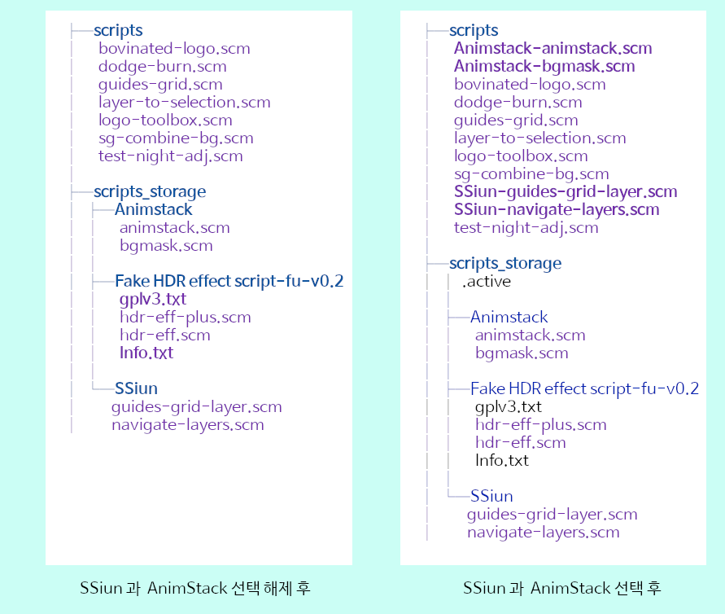
사용:
- 각 대화창 (도킹 가능한 대화창 메뉴 아래)을 열고 그 안에서 우클릭 해서 "{애드온이름} sets ..." 클릭
단, scripts (Script-fu 스크립트인 *.scm 파일용) 는 "도움말/Scripts sets..." 메뉴를 사용. - 각 모음 이름의 체크란에 표시/비표시 하여 대화창에 포함/제거
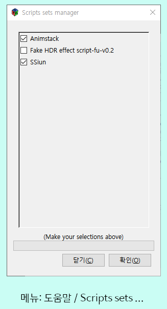 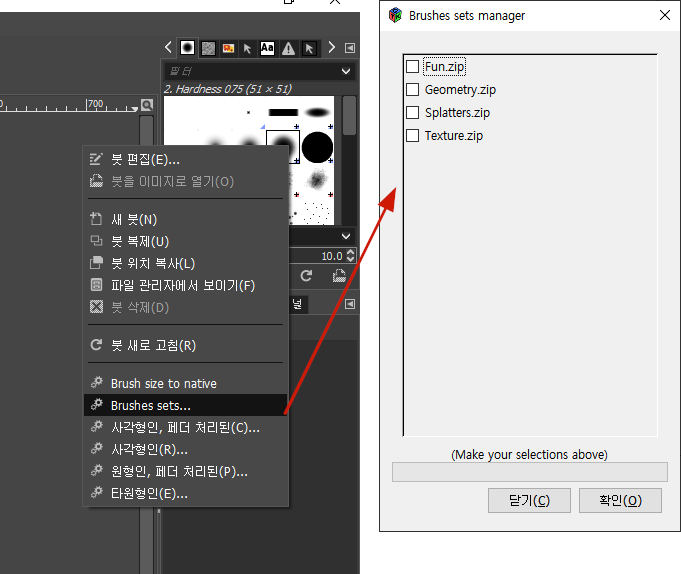
ini파일의 편집한 바꾼 경우 내용이 반영되게 하려면
MS Windows에서는 콘솔(명령 프롬트트 창; cmd 창)에서 py - 3 clear-settings-one-plugin.py 를,
Linux에서는 터미널 창에서 python3 clear-settings-one-plugin.py를 실행하고
김프 버전을 선택한 후
addonCollectionManager-3.0.py 를 입력하고 다음 줄에서 엔터만 입력
Arrange Layers(레이어 배열하기)
arrange-layers-0.2.py
메뉴 이미지/Ofnuts/Arrange Layers/Spread (펼치기)
Horizontally(수평으로)
Vertically(수직으로)
Horizontally with outer space(수평, 바깥쪽 공백 넣기)
Vertically with outer space(수직, 바깥쪽 공백 넣기)
메뉴 이미지/Arrange Layers/Space (간격)
Horizontally(수평)
Horizontally(수직)
설명서: http://gimp-tools.sourceforge.net/tools.shtml, arrange-layers
이미지 안의 모든 보이는 레이어가 대상
- Spread(펼치기): 선택 영역 안에 같은 간격으로 배열
- Space(간격): 지정한 간격으로 배열
Fill with brush strokes to density(지정한 밀도만큼 브러시로 칠하기)
density-brush-fill-0.2.py
메뉴: 필터/Ofnuts/Render/Fill with broke strokes to density...
짧은 설명: Fill a new layer with random strokes of the current brush
until the required density is reached
설명서: http://gimp-tools.sourceforge.net/tools.shtml, density-brush-fill
현재 레이어 크기의 새 레이어를 만들고, 선택 영역(없으면 레이어 전체) 안에 지정한 밀도가 (거의) 될 때까지 현재 브러시로 랜덤으로 칠하기.
Flatten visible layer groups(보이는 레이어 그룹 합치기)
flatten-groups-0.0.py
메뉴: 이미지/Ofnuts/Flatten visible layer groups...
보이는 그룹을 각각 합치기(flatten).
옵션
- Level: 이 레벨 깊이의 레이어 그룹 합치기
Fill cells with random colors(셀을 랜덤 색으로 채우기)
ofn-random-fill/ofn-random-fill.py
메뉴: 필터/Ofnuts/Render/Fill cells with random colors...
짧은 설명: : fills areas with random colors from gradient or palette
설명서: ofn-random-fill/ofn-random-fill.html
그레이디언트나 팔레트에서 무작위 고른 색 또는 현재의 전경/배경색으로 각 선택 영역을 채우기
팔레트의 색을 사용하려면 '도킹 가능한 대화창/팔레트'에서 팔레트를 미리 선택해야 함.
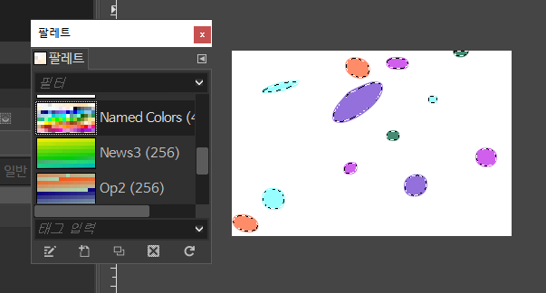
Luminosity Tiler(광도 타일러)
luminosity-tiler-0.1.py
메뉴: 필터/Ofnuts/Render/Artistic/Tiles from luminosity/
절차:
- 이미지 열기
- https://sourceforge.net/projects/gimp-tools/files/samples/SampleLuminosityTiles.zip 에 있는
파일 중 하나 열기
(이 문서가 있는 폴더의 SampleLuminosityTiles 폴더에 풀어 놓았음.) - 먼저 연 이미지의 레이어 패널에서 레이어 선택
- 필터/Artistic/Tiles from Luminosity
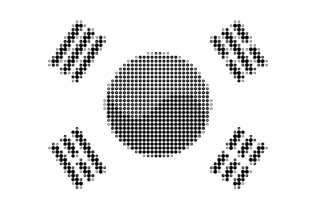
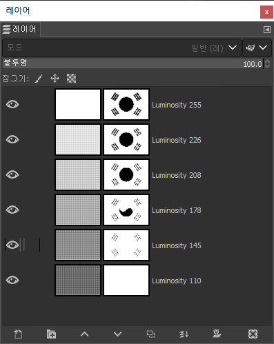
Scroll Layer(레이어 스크롤링)
ofn-scroll-layer/ofn-scroll-layer.py
메뉴: 레이어/Ofnuts/Scroll layer/
레이어의 오프셋을 점차 변경시키면서 복사본 만들기
프레임 개수는 오프셋 옵션이 결정
수직 스크롤이면 (수직스크롤 범위와 수직오프셋의 최소공배수) ÷ 수직오프셋이 만들어질 프레임의 개수
스코롤 범위는 반복타일로 구성된 레이어라면 타일의 크기, 아니면 레이어 크기
레이어에 마스크가 있으면 같이 복사되지만 위치는 변경되지 않으므로 뷰포트 역할을 함
animstack 으로 같은 효과 내기
방울 레이어. 높이=240. 대칭 페인팅에서 타일링 옵션 사용.
y 간격은 레이어 높이. x 간격은 레이어 너비.
방울 붓을 만들어 사용.
| 레이어 스택 | |
|---|---|
| 빈 레이어[*60] | 60 = 240 ÷ 오프셋크기 |
| 방울 레이어[.copy][-;offset:0:-4*i][!mask] | [.copy] 앞의 점 사용(비누적 모드). x 오프셋=0, y 오프셋 = -4, i는 타겟 프레임 번호. 맨 아래(즉, 맨 처음)이 0. mask: 현재 선택 영역이 방울 레이어의 마스크가 됨. |
| 잔 레이어[bg][-;delay:100][-replace] | |
방울 레이어에서 표시될 부분만 선택
필터/애니메이션/Process Animstack tags 실행
Fill with average color(평균 색상으로 채우기)
ofn-average-fill/ofn-average-fill.py
메뉴: 편집/Ofnuts/Fill with average color
선택 영역의 평균 색상으로 선택 영역 채우기
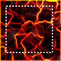 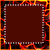
Brush strokes on path(경로에 브러시로 스트로크)
ofn-brush-strokes-on-path/ofn-brush-strokes-on-path.py
메뉴: 편집/Ofnuts/Brush strokes on path
경로(부경로)에 브러시 스트로크(붓찍기)
Strokes: (부)경로에 몇 번 붓을 찍을지 결정.
Spacing: (Strokes가 0일때만 사용) 붓찍기 사이의 픽셀 단위 간격
Angle: 붓의 각도를 고정할지, 경로에 맞추어 각도를 바꿀지 결정
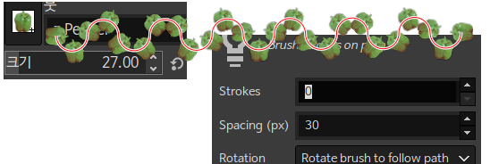
Coalesce images(이미지 합체)
ofn-coalesce-images/ofn-coalesce-images.py
메뉴: 파일/Ofnuts/Coalesce images
루트 폴더에 있는 이미지마다 하위 폴더에서 이름이 같은 파일들을 찾아 xcf 파일에 모아서 저장
소스 폴더와 하위 폴더에는 이미지 파일만 있어야 함.
옵션
Root of image directories: 소스 폴더. 이 이미지에 있는 이미지마다 이름이 같은 이미지를 하위 폴더에서 찾음.
Output directory: xcf 파일을 저장할 폴더.
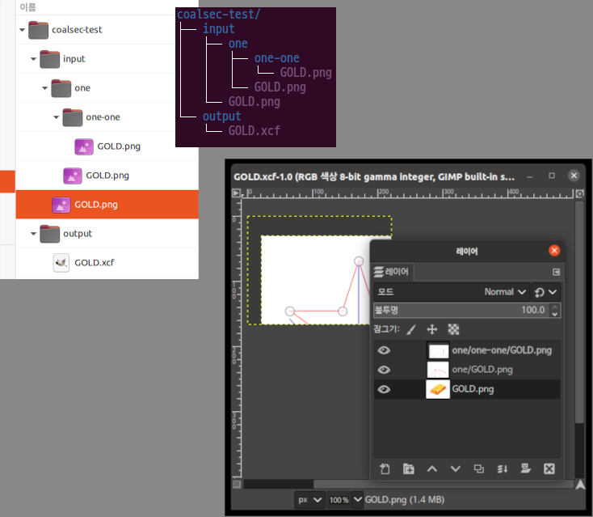
Add colormap as layer(색상맵을 레이어로 추가)
ofn-colormap-to-layer/ofn-colormap-to-layer.py
메뉴: 색/Ofnuts/Add colormap as layer
짧은 설명: renders the colormap of a color-indexed image as a palette on a new layer.
설명서: 없음
인덱스 색상인 이미지에, 색상맵(팔레트를 나타낸 표)를 레이어로 추가
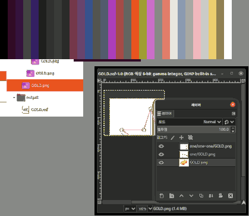
(sample width:13, sample height:100)
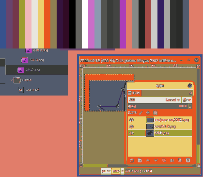
Progressive merge of two visible layers(두 보이는 레이어의 점진적 병합)
progressive-merge-0.1.py
메뉴: Image/Ofnuts/Progressive merge of two visible layers...
짧은 설명: 없음
설명서: 없음
레이어 스택에서 맨 위에 보이는 레이어의 불투명도를 점차 변경하면서
그 아래의 보이는 레이어와 병합시킨 레이어를
새 이미지의 레이어 스택에 차례 차례 쌓음.
옵션:
- Steps: 새 이미지의 최종 레이어 개수
- Opacity: 맨 위 레이어에 사용할 최종 불투명도
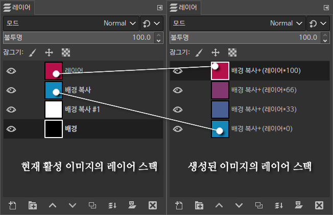
Random ellipses(무작위 타원)
random-ellipses-0.3.py
메뉴: Filters/Ofnuts/Render/Random ellipses...
짧은 설명: Generates random grayscale ellipses in a new layer.
설명서: http://gimp-tools.sourceforge.net/tools.shtml random-ellipses
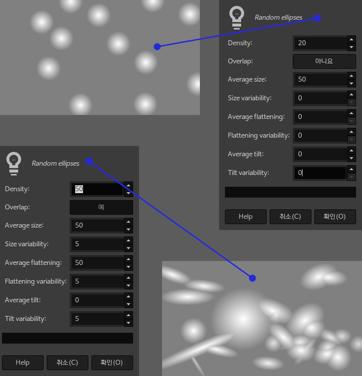
그레이디언트나 팔레트에서 무작위로 색을 선택하여 각 선택 영역을 채우기
팔레트의 색을 사용하려면 '도킹가능한 대화창/팔레트'에서 미리 팔레트를 선택해야 함.
Change frame delays(프레임 지연시간 변경)
retime-linked-layers-0.0.py
메뉴: Filters/Ofnuts/Animation/Change frame delays...
짧은 설명: 없음
설명서: 없음
(100ms) 등으로 이미 지연 시간이 지정되어 있고, 연결(링크)된 레이어의 지연 시간 변경
Swap(스왑)
seamless-helper-1.0.py
메뉴: Layer/Ofnuts/Swap
짧은 설명: 없음
설명서: 없음
레어어의 중심/코너(왼쪽/오른쪽, 위/아래)를 맞바꿈
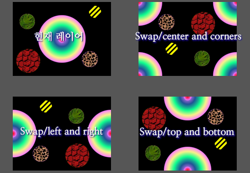
Show text information(텍스트 정보 표시)
text-info-0.1.py
레이어 창 문맥 메뉴: Ofnuts/Show text information
짧은 설명: 없음
설명서: 없음
"parasite"에 저장된, 텍스트 레이어의 정보를 표시
저장되지 않은 이미지는 텍스트 정보를 볼 수 없음
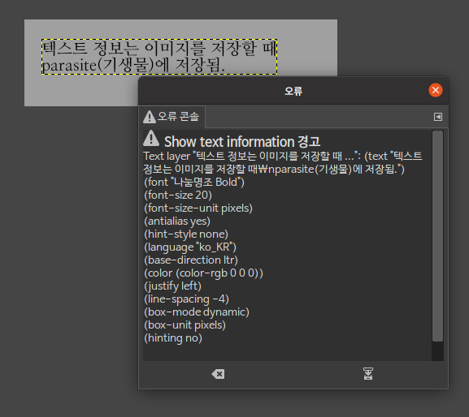
Autocrop layer(레이어 자동 자르기)
autocrop-linked-layers-0.2.py
메뉴: Image/Ofnuts/Autocrop linked layers...
메뉴: Image/Ofnuts/Autocrop all layers...
짧은 설명: 이미지 안의 모든 링크된 레이어를 자동으로 자릅니다
연결된 레이어마다 내용에 맞추어 레이어의 영역 크기를 변경
Dump layer hierarchy(레이어 계층구조 덤프)
ofn-dump-layer-hierarchy/ofn-dump-layer-hierarchy.py
메뉴: Image/Ofnuts/Dump layer hierarchy
짧은 설명: 레이어 계층구조를 콘솔에 덤프합니다
설명서: 없음
레이어 계층구조를 오류콘솔(이 창이 없으면 메시지 창)에 표시합니다.
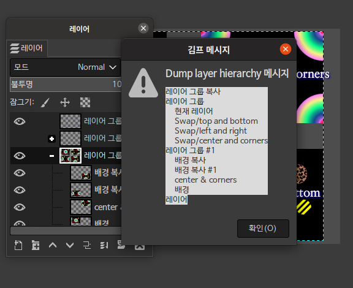
Engraving(선으로 판각하기)
ofn-engraving.py
메뉴: Filters/Ofnuts/Artistic/Engraving lines/
Engraving lines with varying thickness(두꼐를 바꾸면서 선으로 판각)
Engraving lines with varying dashes(파선 길이를 바꾸면서 선으로 판각)
짧은 설명: line-engraving from an image (Gimp2.10 and later)
설명서: ofn-engraving/Doc/ofn-engraving.html
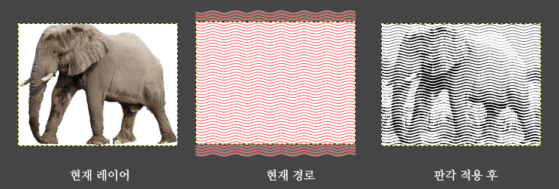
Erase background (배경 지우기)
ofn-erase-background.py
메뉴: Layer/Ofnuts/Erase background
짧은 설명: 텍스트와 로고 주위의 일률적인 배경을 투명하게 만듭니다
설명서: ofn-erase-background/ofn-erase-background.html
선택 영역의 바깥쪽에서 지정한 색을 지움. 배경을 퍼지 선택해서 지우고 나서 실행.
컴퓨터로 생성한 로고나 텍스트의 테두리에 사용
옵션
Delete color:지울 색을 지정. 자동, 또는 현재 배경색(도구상자 안에 표시된) 중 선택
Edges: 지울 테두리 깊이를 선택. clean, dirty, very dirty은 각각 1,2,3픽셀에 해당.
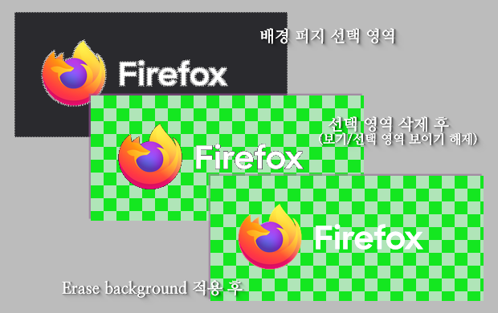
Export all layers(모든 레이어 내보내기)
ofn-export-layers.py
설명서: ofn-export-layers/ofn-export-layers.html
메뉴: File/Ofnuts/Export/Export all layers
짧은 설명: exports all layers to individual files
레이어의 크기 그대로 저장함. (이미지 크기로 변경해서 저장하지 않음)
옵션:
-
- Diretory
- 이미지를 저장할 디렉터리
-
- Layer name
- 레이어를 저장할 파일 이름에 사용할 이름 패턴. 확장명을 반드시 포함해야 함. 여기서 지정한 확장명이 저장할 이미지의 확장명이 됨.
{imageName} 이미지의 이름(base name; 경로, 확장명 제외)
{name} 레이어의 이름에서 파일 확장명을 뺀 것.
{rawName} 레이어의 이름 그대로.
{numUp0} 레이어 스택 아래에서부터 위로, 0부터 시작해서 번호를 증가시킴.
{numUp0} 레이어 스택 아래에서부터 위로, 1부터 시작해서 번호를 증가시킴.
{numDown0} 레이어 스택 위에서부터 아래로, 0부터 시작해서 번호를 증가시킴.
{numDown1} 레이어 스택 위에서부터 아래로, 1부터 시작해서 번호를 증가시킴.
{numUp0:4} 숫자를 4칸에 표시함(우측 정렬).
{numUp0:04} 앞에 0을 붙여서 숫자를 4칸에 표시함(우측 정렬).
{count} 레이어 개수 {width} 레이어의 너비 {height} 레이어의 높이
중괄호 안은 Python 문자열의 format 함수가 사용하는 형식과 동일함.
Extract Objects(물체 추출)
ofn-extract-objects.py
메뉴: Layer/Ofnuts/Extract objects/
Extract objects to files(파일로 물체 추출)
Extract objects to layers(레이어로 물체 추출)
짧은 설명: 활성 레이어의 비-투명 영역을 추출하고 파일로 저장합니다
설명서: ofn-extract-objects/ofn-extract-objects.html
옵션
-
- Layer size(레이어 크기)
- Tight fit: 물체 크기의 레이어로
Canvas Size: 캔버스 크기의 레이어로- Alpha threshold(알파(불투명도) 문턱값)
- 이 값이 크면 더 여러 개가 검출됨
- Layer name pattern(레이어 이름 패턴)
- {imageName} 이미지의 순 이름(경로, 확장명 제외)
{layerName} 원본 레이어의 이름
{num0}, {num1} 0 또는 1부터 시작하는 번호. 어느 정도 임의로 변함.
{x}, {y}, {w}, {h} 원본 레이어에서 물체를 포함하는 사각형의 x 위치, y 위치, 너비, 높이. 이 값이 같은 다른 물체가 있을 수 있음.
중괄호 안은 Python 문자열의 format 함수가 사용하는 형식과 동일함.
파일로 물체를 추출할 때는 Layer name pattern에 확장명을 반드시 포함해야 함. 여기서 지정한 확장명이 저장할 이미지의 확장명이 됨.
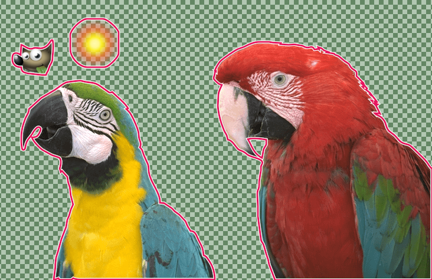
Extract objects to layers
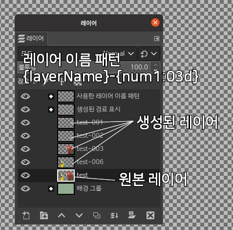
Extract objects to files
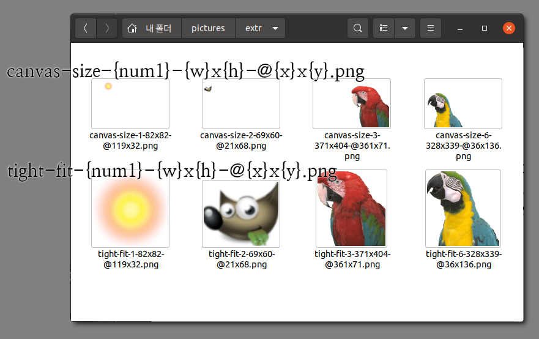
Open next image(다음 이미지 열기)
ofn-file-next.py
메뉴: File/Ofnuts/Open/Open next image/
lexical(사전순)
numerical(수치순)
짧은 설명: speeds up editing of long series of files by performing "save file, open next in sequence" in one operation
설명서: ofn-file-next/ofn-file-next.html
이 스크립트를 사용하기 전에, 디렉터리 안의 이미지를 열고 편집.
이 스크립트를 호출하면 이미지를 저장하고 디렉터리 안의 다음 파일(이름으로 결정됨)을 엶.
Guillotine(재단기)
ofn-guillotine-layer.py
메뉴: Layer/Ofnuts/Guillotine
짧은 설명: slices a layer using guides
설명서: ofn-guillotine-layer/ofn-guillotine-layer.html
안내선을 기준으로 현재 레이어를 조각내서 여러 레이어로 만듦(각 조각마다 레이어 하나)
Hatching (해칭 패턴)
ofn-hatching.py
메뉴: Filters/Ofnuts/Render/Pattern/Hatching
짧은 설명: render hatchings
설명서: ofn-hatching/Doc/ofn-hatching.html
옵션
- Style: 미리 몇 가지 값을 정해 둔 스타일의 목록
어떤 스타일을 선택했느냐에 따라서 아래 옵션들이 적용될지 무시될지 여부가 달라짐.
예를 들어, '캡 스타일'은 'simple lines,absolute'에서는 Butt, 'simple lines,relative'에서는 Round로 고정되어 있음.
- Angle(각도): 수평선이 0도. +가 반시계방향(좌회전). -는 시계 방향(우회전).
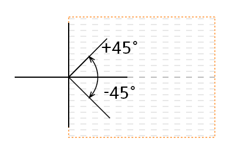 - Spacing(간격): 선의 위쪽에서부터 다음 선의 위쪽까지의 거리. 픽셀 단위의 값.
- Absolute width(절댓값 두께): 픽셀 단위의 값
- Relative width(상댓값 두께): Spacing(간격)에 대한 백분율(퍼센티지,%)
-
Dash period(대시 주기):
- 대시의 시작부터 다음 대시의 시작까지의 거리 팩터. 두께(width)의 몇 배인지를 지정
- Absolute(절댓값)를 사용할 때:
절댓값_두께(픽셀) * 대시_주기가 실제 픽셀 거리. - Relative(상댓값)을 사용할 때
픽셀 단위 두께(간격 * 상댓값_두께(%)/100)의 몇 배인를 지정. 간격 * 상댓값_두께(%)/100 * 대시_주기가 실제 픽셀 거리.
- Absolute(절댓값)를 사용할 때:
- Dash offset: 대시 주기의 몇 퍼센트 위치에서 대시가 시작될 것인지를 결정.
- Dash ratio(대시 비율): 대시 주기에 대한 백분율.
- Cap Style(캡 스타일)
- Butt(뭉툭한): 선분 끝에 붙는 것 없음.
- Square(정사각): 선분 끝이 정사각형으로 처리됨. (두께의 절반이 더 붙음).
- Round(둥근): 선분 끝이 원으로 처리됨 (두께의 절반이 반원 모양으로 더 붙음).
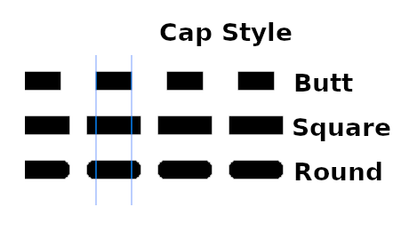
구성 파일(ofn-hatching.json)
- 플러그인과 같은 폴더의 {플러그인 이름}.json 이 구성 파일.
- 각 스타일에서 widthType 키는 필수. 나머지 키는 생략하면 기본 값이 적용됨.
Absolute width를 사용하려면 widthType:"ABSOLUTE"
Relative width를 사용하려면 widthType:"RELATIVE"
다음은 absolute width를 사용하는 스타일에 대한 실험. 실제 크기의 70%.
- angle: 45
- spacing: 15
- absolute width: 10
- dash period: 10
- dash ratio: 80
- dash offset: 0
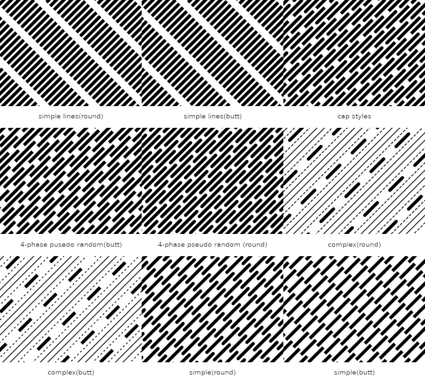
Interleave layers(레이어 상호배치)
ofn-interleave-layers.py
메뉴: Image/Ofnuts/Interleave layers/
설명서: ofn-interleave-layers/ofn-interleave-layers.html
레이어 스택 안의 레이어들을 interleave(상호 배치)한 새 이미지를 만듦.
-
interleave a stack of layers under current stack (현재 스택 아래로 레이어 스택 상호 배치) 현재 이미지의 레이어 스택에 다른 이미지의 레이어들을 하나씩 끼운 새 이미지를 만듦.
-
interleave single layer over stack(title mode) (단일 레이어를 스택 위로 상호 배치(제목 모드)) 현재 이미지의 레이어 스택에서, 단일 레이어를 보이는 레이어 각각의 위에 끼운 새 이미지를 만듦. (레이어는 대화창에서 이름으로 선택)
-
interleave single layer under stack(sprite mode) (단일 레이어를 스택 아래로 상호 배치(스프라이트 모드)) 현재 이미지의 레이어 스택에서, 단일 레이어를 보이는 레이어 각각의 아래에 끼운 새 이미지를 만듦. (레이어는 대화창에서 이름으로 선택)
☞Merge 옵션은 '예'로 해야 원래 레이어와 끼운 레이어가 합쳐짐.
Mirror layers(레이어 스택 거울 대칭)
mirror-layers-0.1.py
메뉴: Image/Ofnuts/Mirror layers
설명서: http://gimp-tools.sourceforge.net/animationtools.shtml, mirror-layers
레이어 스택의 레이어를 반대 순서로 위쪽에 복제(인덱스 모드에서도 사용 가능)
Invert colormap by hue(색조 기준으로 색상맵 반전)
invert-colormap-0.0.py
메뉴: Color/Invert colormap by hue
짧은 설명: 없음
설명서: 없음
인덱스된 색상 이미지(이미지/모드/인덱스)에서 색상맵의 색조를 반전.
Fill cells with random colors(무작위 색으로 셀 채우기)
ofn-random-fill.py
메뉴: Filters/Ofnuts/Render/Fill cells with random colors
짧은 설명: 영역들을 그레이언트나 팔레트에서 가져온 무작위의 색들로 채움
Replace foreground by background(전경색을 배경색으로 교체)
replace-foreground-by-background-0.0.py
메뉴: Color/Ofnuts/Render/Replace foreground by background
설명서: http://gimp-tools.sourceforge.net/tools.shtml, replace-foreground-by-background
색이 현재 전경색과 같은 픽셀을 현재 배경색으로 다시 칠하기
Clear layers(여러 레이어에서 지우기)
clear-layers-0.2.py
메뉴: Edit/Ofnuts/Clear layers/
All
Visible
짧은 설명: Deletes the selection in several layers.
설명서: http://gimp-tools.sourceforge.net/tools.shtml, clear-layers
여러 레이어에서 선택 영역 안을 삭제. 그룹 레이어가 있으면 사용 불가.
"도구/SSiun/Layer/모든 레이에에서 삭제하기"는 그룹 레이어 지원. "보이는 레이어","그룹 안으로 들어가기" 옵션 있음.
SSiun 스크립트/플러그인 페이지의 ssiun-plugins-20210701-0140.7z 파일 안에 있음
Brush size to native(브러시 크기를 본디 크기로)
brush-size-to-native-0.0.py
[브러시 창 문맥 메뉴] Ofnuts/Brush size to native
짧은 설명: 없음
설명서: 없음
코드 안의 설명 : Sets context brush size to the native brush size
(현재 브러시 크기를 본디 브러시 크기로 설정)
Crop chart using guides(안내선을 이용한 크롭 차트)
crop-chart-0.0.py
메뉴: Layer/Ofnuts/Crop chart using guides...
짧은 설명: 없음
설명서: 없음
수직, 수평 안내선 각 4개씩 모두 8개의 안내선으로 제거할 중간 영역을 선택
지정한 영역을 제거하고 바깥쪽과 안쪽을 붙임
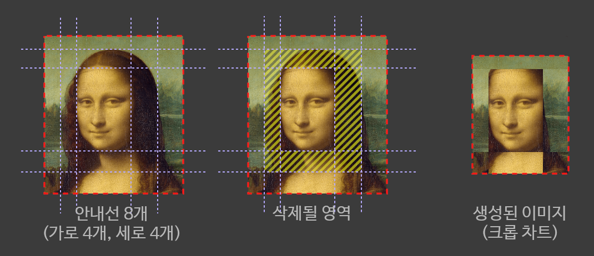
Random pixels from palette
random-pixels-from-palette-0.0.py
메뉴: Filters/Ofnuts/Render/Random pixels from palette
짧은 설명: 없음
설명서: 없음
현재 선택한 팔레트(창/도킹 가능한 대화창/팔레트) 안에서 색을 무작위로 골라서 칠함
선택 영역 상관 없이 현재 레이어의 모든 픽셀을 채움.
Realign(재정렬)
ofn-layer-aligner.py
메뉴: Layer/Ofnuts/Realign
짧은 설명: 두 쌍의 참조 점을 사용하여 두 레이어를 정렬(align)합니다
설명서: ofn-layer-aligner/ofn-layer-aligner.howto.html
현재 경로의 1번째, 2번째 앵커 위치와 같은 곳으로 (참조 레이어에서 위치를 참조)
현재 레이어에서 3번째, 4번째 앵커에 있는 부분이 옮겨 가도록 레이어를 변형(이동, 회전, 확대축소)
앵커 4개가 두 개의 선분 또는 하나의 선분에 있어야 함
순서
- 4-앵커 경로 만들기
- 참조 레이어(없어도 됨)의 두 위치(대상 위치)에 앵커 만들기(클릭, 클릭)
- 현재 레이어의 두 위치(원본 위치)에 다음 앵커 만들기(Shift+클릭, 클릭)
- 현재 레이어에서 실행
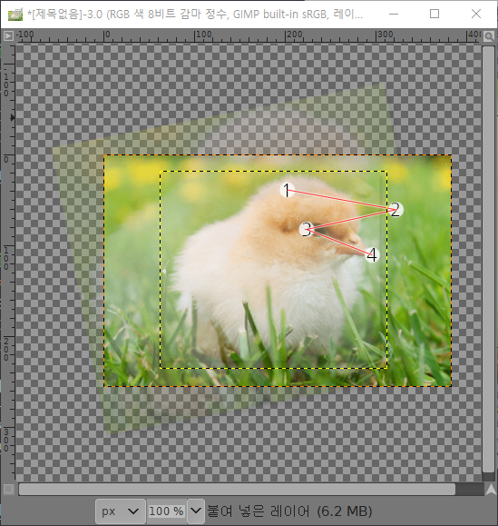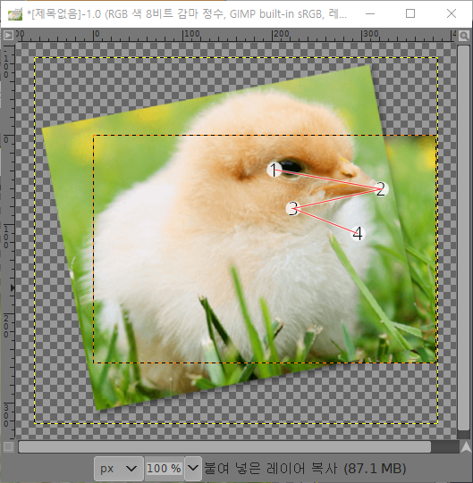
Change blend mode of visible layers(보이는 레이어의 혼합 모드 변경)
ofn-layer-modes.py
메뉴: Image/Ofnuts/Change blend mode of visible layers
짧은 설명: 없음
설명서: 없음
그룹 레이어 안 레이어는 변경
'도구/SSiun/Layer/모든 보이는 레이어의 모드 변경'이 훨씬 더 많은 옵션을 제공
SSiun 스크립트/플러그인 페이지의 ssiun-plugins-20210701-0140.7z 파일 안에 있음
Show layer over background(배경 위에 레이어 표시)
ofn-layer-over-background.py
레이어 창 문맥 메뉴: Ofnuts/Show layer over background
짧은 설명: makes the active layer the only one visible over the background layer
설명서: ofn-layer-over-background/ofn-layer-over-background.html
다른 모든 레이어를 숨기고 현재 레이어와 배경 레이어를 표시
Straighten(곧게 펴기)
ofn-layer-straightener.py
메뉴: Layer/Ofnuts/Straighten
짧은 설명: 이미지의 수직 또는 수평이 되어야 하는 (경로의)포인트 쌍 하나를 사용하여 레이어를 곧게 폄
김프 2.10.4 이상이면 측정(Measure) 도구의 내장된 "straighten(곧게 하기)" 기능으로 대체되었음
설명서: ofn-layer-straightener/ofn-layer-straightener.howto.html
설명서 내용 요약
경로의 앵커 한 쌍(앵커 2개인 부경로 하나)으로 수평 또는 수직이 되어야 하는 부분 지정
또는 앵커 두 쌍(앵커 2개인 부경로 두 개)으로 수평 또는 수직이 되어야 하는 부분을 기준으로 양 옆을 대칭되게 지정.
사진 안에서 믿을 만한 수평선은 지평선 또는 큰 호수나 바다의 건너편. 그런 부분이 없을 때는 건물 등의 수직선 부분을 지정.
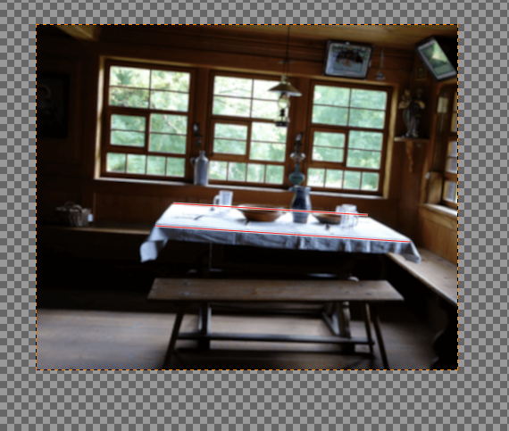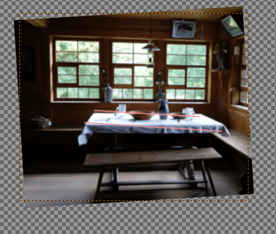
Tiles (타일)
ofn-layer-tiles.py
메뉴: Layer/Ofnuts/Tiles/
Split tiles (by rows and columns)
Split tiles (by width and height)
Join tiles
짧은 설명: creates tiles/layers/animation frames from a single layer, or joins them into a single layer.
Resize layers to image size(여러 레이어를 이미지 크기로 변경)
ofn-layers-to-image-size.py
메뉴: Image/Ofnuts/Resize layers to image size
짧은 설명: applies 'Layer/Layer to image size' to all or all visible layers
Luminosity (광도)
ofn-luminosity-masks.py
메뉴: Select/Ofnuts/Luminosity/
Raw luminosity
Patdavid/Lights/L, LL, LLL
Patdavid/Darks/D, DD, DDD
Patdavid/MidTones/M, MM, MMM
짧은 설명: create a "luminosity mask" selection over the current layer
Name image(이미지 명명)
ofn-name-image.py
메뉴: Image/Ofnuts/Name image
짧은 설명: 이미지를 디스크에 저장하지 않고 이름을 부여합니다
Outline layer contents(레이어 내용에 외곽선)
ofn-outline-layer.py
메뉴: Layer/Ofnuts/Outline layer contents
짧은 설명: 레이어 내용에 외곽선을 추가합니다 (Gimp2.10이나 그 이상)
Stack layers with perspective(원근법 적용한 레이어 쌓기)
ofn-perspective-stack.py
메뉴: Image/Ofnuts/Stack layers with perspective
짧은 설명: creates a perspective view of the image layers
설명서: ofn-perspective-stack/doc/ofn-perspective-stack.html
모든 레이어 또는 연결된 레이어를, 경로의 앵커 네개로 표시한 원근을 적용하여, 새 이미지의 레이어 스택에 쌓기.
옵션에서 Ghost는 레이어의 투명한 부분, 또는 레이어 바깥쪽 부분.
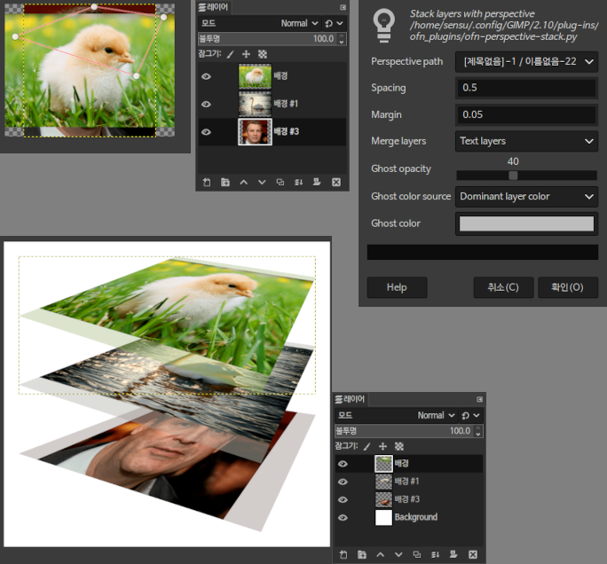
Sequence numbers on anchors(앵커 상에 연속 번호)
ofn-points-sequence.py
메뉴: Filters/Ofnuts/Render/Sequence numbers on anchors
짧은 설명: adds sequential number labels to an image, using a path
설명서: ofn-points-sequence/doc/ofn-points-sequence.html
경로의 앵커 번호를 텍스트 레이어 여러 개로 표시하기. 각 부경로마다 번호가 새로 시작됨.
'Start at' 옵션으로 시작 번호 지정 가능.
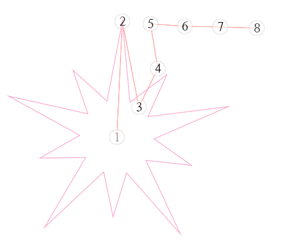
Guides/Presets (안내선/미리설정)
ofn-preset-guides.py
메뉴: Image/Guides/Ofnuts//Presets/......
짧은 설명: lets you define a bunch of preset guides in a file, and then call them using a menu entry or a keyboard shortcut.
짧은 설명: 정의하게 해줍니다, 한 다발의 미리설정된 안내선들을, 파일 안에, 그리고서 그것들을 호출하게, 메뉴 항목 또는 키보드 지름길을을 사용하여.
설명서: ofn-preset-guides/ofn-preset-guides.html
ofn-preset-guides.ini의 내용
# Image guides Centered:centered:[.5]:[.5]:I Margins @20px:margins20:20, -20 : 20,-20:I Margins @50px:margins50:50,-50 :50,-50:I Full Monty:fullmonty:[20,50,.5,-50,-20]:[20,50,.5,-50,-20]:I # Layer guides Crosshair:crosshair:.5:.5:L Horizontal:horizontal:0.,1.::L Vertical:vertical::0.,1.:L Frame:frame:0.,1.:0.,1.:L
ini 파일의 내용 설명
# # -1.0 부터 +1.0까지의 상댓값으로 지정. -1.0은 좌단 또는 상단. # 메뉴 항목 이름 : 식별자 : [수평안내선의 세로 위치 나열] : [수직안내선의 가로 위치 나열]: I나 L(I는 이미지, L은 레이어, 생략하면 I가 됨) # # 절댓값으로 지정 # 메뉴 항목 이름 : 식별자 : 수평안내선의 세로 위치 나열 : 수직안내선의 가로 위치 나열: I나 L(I는 이미지, L은 레이어, 생략하면 I가 됨) # # 위치 목록은 python eval함수의 인자로 사용됨. # # 식별자는 알파벳과 숫자만 올수 있음 #
Change color of visible text layers(보이는 텍스트 레이어의 색 변경)
ofn-recolor-text-layers.py
메뉴: Image/Ofnuts/Change color of visible text layers
짧은 설명: 없음
설명서: 없음
보이는 모든 텍스트 레이어의 색을 같은 색으로 변경. 그룹 레이어 안의 텍스트는 변경되지 않음
"도구/SSiun/Layer/모든 텍스트 레이어 색 변경"은 그룹 레이어 지원. 모든 레이어, 보이는 레이어 선택 가능.
"도구/SSiun/Layer/모든 텍트트 레이어 스타일 통일"은 색뿐만 아니라 다른 것도 변경할 수 있음.
SSiun 스크립트/플러그인 페이지의 ssiun-plugins-20210701-0140.7z 파일 안에 있음
Remove top layer(맨 위 레이어 제거)
ofn-remove-top-layer.py
메뉴: Image/Ofnuts/Remove top layer
짧은 설명: 없음
설명서: 없음
글자 그대로 맨 위 레이어 제거
Reorder layers(레이어 순서 바꾸기)
ofn-reorder-copy-layers.py
메뉴: Image/Ofnuts/Reorder linked layers
메뉴: Image/Ofnuts/Copy linked layers
짧은 설명: 없음
설명서: 없음
Reorder linked layers
현재 레이어 위로, 연결된 레이어 모두 이동. (그룹 안의 레이어에서는 사용 불가)
Copy linked layers
현재 레이어 위로, 연결된 레이어 모두 복사. 그룹 안의 레이어에서도 사용 가능.
현재 레이어가 그룹 레이어이면 그룹 레이어 안으로 모두 복사
Multi-rotate (다중 회전)
ofn-rotate-layer.py
메뉴: Layer/Ofnuts/Transform/Multi-rotate...
짧은 설명: 원본 레이어의 다중 회전된 사본들을 그려냅니다
설명서: ofn-rotate-layer/ofn-rotate-layer.html
옵션
{count} : 생성되는 총 레이어 개수
{direction} : 시계 방향 회전이면 CW, 아니면 CCW로 바뀜.
{num0} : 0부터 시작하고 1씩 증가
{num1} : 1부터 시작하고 1씩 증가
{angleInt} : 사본 레이어의 회전 각도. 반올림됨.
{angleDec} : 각도에 소숫점 이하 숫자까지 표시.
Python 문자열의 format 메소드에 사용하는 것과 같은 형식임.
예를 들어 {num0:03d} 는 앞에 0을 붙여 세자리 수로 맞춤.
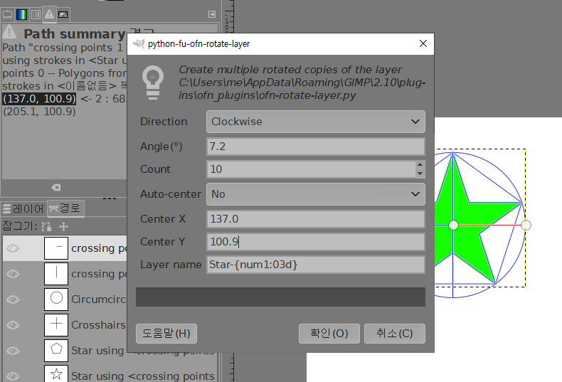
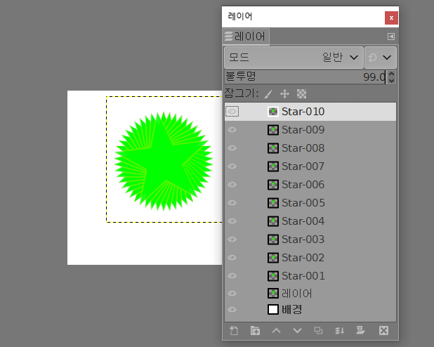
Save next(다음 저장)
ofn-save-next.py
메뉴: File/Ofnuts/Save/Save next
짧은 설명: saves consecutive versions of a file by automatically determining the sequence number
파일의 연속 번호 증가시켜서 저장
Shred/Unshred (찢기/찢기제거)
ofn-shred-layer.py
메뉴: Layer/Ofnuts/
Shred...
Unshred...
설명서: ofn-shred-layer/ofn-shred-layer.html
Shred: 레이어를 긴 조각으로 여러 개로 나누고 일정한 간격으로 배치한 새 이미지 만듦.
UnShred: 긴 조각 간의 간격을 없앤 새 이미지를 만듦
Swap strips(스트립 맞바꾸기)
ofn-swap-strips.py
메뉴: Layer/Ofnuts/Swap strips
짧은 설명: 없음
설명서: ofn-swap-strips/ofn-swap-strips.html
안내선 세 개로 지정된 수평이고 인접한 스트립(긴 조각)을 맞바꿈
Symmetries (대칭)
ofn-symmetries.py
메뉴: Layer/Ofnuts/Symmetries/
Quadrilateral symmetry
Diagonal symmetry (%%s) # %%s = one of ['NW','NE','SE','SW']
Straight symmetry (%%s) # %%s = one of ['N','S','E','W']
짧은 설명: various symmetries (horizontal, vertical, diagonal and more) on layers
설명서: ofn-symmetries/ofn-symmetries.html
주의. 레이어는 하나뿐이어야 하고, 레이어의 좌상단이 캔버스의 좌상단과 일치해야 함
Diagonal과 Straight는 레이어 반쪽을 선대칭
Diagonal:
대각선 선대칭. NW(북서), NE(북동), SE(남동), SW(남서)는 좌상부, 우상부, 우하부, 좌하부를 선대칭
Straight:
수평선, 수직선 선대칭: N(북), S(남), E(동), W(서)는 각각 상부, 하부, 좌측, 우측을 선대칭.
Quadrilateral 은 레이어 전체를 90도씩 회전하여, 레이의 우측, 우하측, 하측에 붙임
Export tiles(타일 내보내기)
ofn-tiles.py
메뉴: File/Ofnuts/Export/Export tiles/
Export tiles (by rows and columns)
Export tiles (by width and height)
메뉴: File/Ofnuts/Open/Open tiles...
짧은 설명: loads/saves an image from/to individual "tiles"
Trapeze transform(사다리꼴 변형)
ofn-trapeze-transform.py
메뉴: Filters/Ofnuts/Distorts/Trapeze transform...
짧은 설명: 없음
레이어의 사다리꼴 변형
설명서: 없음
오류가 있어서 제대로 작동하지 않음.
Ungroup layers(레이어 그룹 풀기)
ofn-ungroup-layers.py
[레이어 창 문맥 메뉴] Ofnuts/Ungroup layers
짧은 설명: 레이어를 그룹 밖으로 옮깁니다.
설명서: 없음